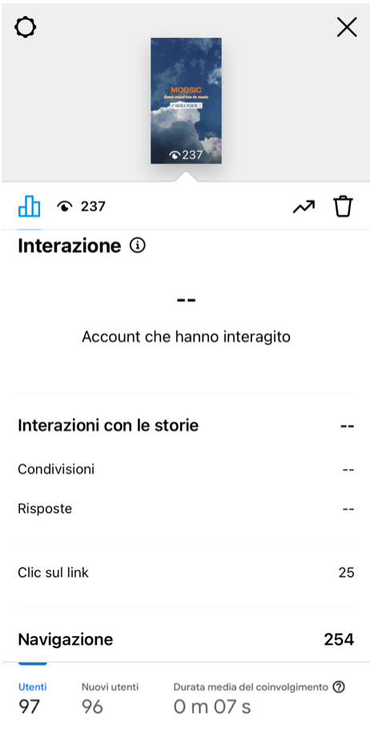

abstract
Moosic è un sito che fornisce diverse playlist da tenere come sottofondo di momenti speciali, per godersi del tutto ogni emozione. È rivolto soprattutto a ragazzi tra i 15 e i 25 anni, e funziona sulla base del mood da loro selezionato.
Project Management Plan
Benchmarking
-
1. Obiettivi
Il sito ha come obiettivo quello di fornire delle playlist che combacino con il mood selezionato dall'utente. Il punto di partenza sono 9 playlist che rispecchiano i 3 principali mood, ma, in una elaborazione più ampia del progetto, questo potrebbe comprendere infinite playlist e infiniti mood.
-
2. Target utente
Ci si rivolge a ragazzi tra i 15 e i 25 anni, che siano utenti Spotify
-
3. Competitors
I due principali competitors sono Spotify e Youtube. Entrambi offrono playlist sulla base di mood diversi, a un target più ampio e con una maggiore varietà di contenuti. Credo però che le playlist che offrono siano poco incentrate sul singolo effettivo utente, poiché spesso comprendono musica che o non piace o è sconosciuta a quest'ultimo. Questo progetto si concentra di più sulla parte di personalizzazione dell'esperienza, anche se sicuramente nei confronti di un target e con una varietà di contenuti molto più ristretti.
Struttura e layout
-

1. Architettura sito
(Rappresentazione della struttura al albero con link interni in lilla e link esterni in giallo)
-

2. Wireframe
(rappresentazione del wireframe della home e delle pagine secondarie)
-
3. Look and feel
In tutte le pagine sono state fatte le stesse scelte grafiche e cromatiche. In particolare predominano il grigio antracite, il giallo e l'arancione, scelti perché in contrasto con l'immagine di sfondo della home e perché si risaltano a vicenda. Inoltre, in tutte le pagine secondarie viene mantenuta la stessa disposizione dei paragrafi. I font principali sono Roboto e Montserrat, entrambi sans-serif perché più d'effetto, considerata l'esigua presenza di scritte e lo stile minimalista di tutto il sito; il primo viene utilizzato nei paragrafi, mentre il secondo nei titoli e sottotitoli. In tutte le pagine vengono ripetuti la navbar e il footer.
Linguaggi e strumenti
-
1. Linguaggi
Sono stati utilizzati: HTML5, CSS e Javascript
-
2. Strumenti
Sono stati utilizzati:
- templates.co per il template HTML
- SublimeText per la scrittura del codice
- Bootstrap per la grafica
- Github per la pubblicazione del sito
- Font Awesome per le icone
- Google Chrome per cercare immagini e ispezionare gli elementi del sito
- Google Fonts per i font
- Instagram, Twitter e Facebook per la promozione social
- Google Analytics per controllare le visite al sito
communication Strategy plan
-
1. Background
Quasi tutte le app di musica già esistenti offrono ai loro utenti delle playlist basate su ciò che solitamente ascoltano e sui loro gusti musicali; mancano però delle playlist che rispecchino esattamente il mood di chi ascolta e, per questo, l'innovazione di questo sito è il fatto di offrire della playlist davvero personalizzate.
-
2. Obiettivi comunicativi
Il progetto ha l'obiettivo di conoscere e far conoscere nuova musica.
Per promuoverlo sono stati utilizzati Twitter, Facebook e Instagram Stories, perché, tenendo conto del target, sono sicuramente il mezzo più diretto ed efficace di diffusione di contenuti. -
3. Target audience e messaggio
Il sito è rivolto a ragazzi tra i 15 e i 25 anni, possibilmente che siano utenti Spotify.
È un target che viene facilmente raggiunto tramite i social network, attraverso post dedicati.
Con una ipotetica espansione e diversificazione del materiale offerto anche il target utente potrebbe variare e comprendere un range di età più ampio.
In ogni caso lo scopo principale rimarrà sempre far scoprire all'utente nuova musica e dargli la possibilità di condividerla in modo anonimo con altri.4.Promozione
La promozione del sito è stata fatta principalmente online perché i social network sono sicuramente il mezzo più efficace per raggiungere il target di utenti. Sono stati usati Instagram Stories, Facebook e Twitter.
5. Valutazione dei risultati
Il progetto è di successo perché propone contenuti innovativi e interessanti per il suo target, che ha colto e apprezzato il progetto (sono stati 23 i feedback positivi).
Gli obiettivi comunicativi sono stati raggiunti soprattutto tramite Instagram Stories, con 237 visualizzazioni e 25 clic sul link al sito.
Il successo del progetto è misurabile anche attraverso il report di Google Analytics che riporta 97 utenti visitatori.
-